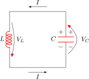

5 Superconducting qubits
Superconducting qubits represent one of the most promising and widely pursued platforms for quantum computing. These qubits leverage the unique properties of superconducting circuits to create controllable quantum systems to realize the quantum computing ideas we’ve explored in previous chapters.
5.1 What are superconducting qubits?
Superconducting qubits are artificial quantum systems built from electrical circuits that include Josephson junctions - superconducting materials separated by a thin insulating barrier. When cooled to extremely low temperatures (typically below 100 mK), these circuits exhibit quantum behavior, allowing them to serve as qubits.
Unlike natural quantum systems such as atoms or ions, superconducting qubits are macroscopic objects - their physical dimensions can be on the order of hundreds of micrometers, making them visible to the naked eye. This macroscopic nature offers both advantages and challenges: they can be fabricated using modified integrated circuit technology, but are also more susceptible to environmental noise and decoherence.
5.1.1 Types of superconducting qubits
There are several varieties of superconducting qubits, each with distinct characteristics and enabled by the amount of control these circuits have:
- Transmon qubits: A modified charge qubit designed to reduce sensitivity to charge noise, currently the most widely used superconducting qubit design.
- Flux qubits: Encode information in the direction of current flow, offering high anharmonicity.
Other designs include fluxonium and 0-\(\pi\) qubits.
In this chapter, we’ll explore how these qubits work, how they’re controlled and measured, and how they implement the abstract quantum operations we’ve studied in previous chapters. We’ll particularly focus on the transmon qubit, which has become the workhorse of many superconducting quantum processors due to its improved coherence properties.
5.2 From electric circuits to a quantum harmonic oscillator
One of the key insights to develop our superconducting qubit is to make a connection with LC circuits and the harmonic oscillator. This allows us to develop out the quantum version of these circuits which we can explore in detail.
5.2.1 The LC circuit

Consider a simple LC circuit composed of an inductor \(L\) and a capacitor \(C\). Suppose we start by giving the capacitor some initial charge \(Q_0\). This initial charge causes a voltage across the capacitor plates, given approximately by \(V_C = \tfrac{Q}{C}\). With time, this charge flows through the inductor; as current builds, it creates a magnetic field in the inductor, thereby storing energy in that field. Eventually, the capacitor’s voltage nears zero (the capacitor becomes discharged), but the current through the inductor continues due to its stored magnetic energy. This current then recharges the capacitor in the opposite polarity, and the energy flows between the capacitor’s electric field and the inductor’s magnetic field.
This back-and-forth exchange of energy repeats, creating an oscillation—just like a mass on a spring. In an LC circuit, the voltage drop across the inductor (given by \(L dI/dt\)) must match the voltage on the capacitor (\(Q/C\)). By summing these drops to zero around the loop, we arrive at the differential equation \[ L \frac{dI}{dt} + \frac{Q}{C} = 0, \] where \(I = \tfrac{dQ}{dt}\). Switching from the capacitor’s charge to an analogous “position” variable (the charge \(Q\)) and identifying the current with its time derivative, we recover the classic second-order differential equation and see the parallel between an LC circuit and the mass-spring system. \[ \frac{d^2 Q}{dt^2} = -\frac1{LC} Q, \] where now \(\omega = \frac1{LC}\), and if we solve this differential equation, we can use the standard approach for second-order linear differential equations with constant coefficients. The general solution has the form:
\[ Q(t) = A \cos(\omega t) + B \sin(\omega t), \]
where \(A\) and \(B\) are constants determined by the initial conditions. If we assume that at \(t=0\), the charge is \(Q(0) = Q_0\) and the current is \(I(0) = 0\) (meaning the capacitor is initially charged but no current is flowing), then:
\[ Q(0) = A = Q_0 \]
And since \(I(t) = \frac{dQ}{dt}\):
\[ I(0) = \omega B = 0 \implies B = 0 \]
Therefore, the solution becomes:
\[ Q(t) = Q_0 \cos(\omega t) \]
This represents a simple harmonic oscillation of the charge with angular frequency \(\omega = \frac{1}{\sqrt{LC}}\). The current can be found by taking the time derivative:
\[ I(t) = \frac{dQ}{dt} = -Q_0 \omega \sin(\omega t) = -\frac{Q_0}{\sqrt{LC}} \sin(\omega t) \]
These equations show that the charge and current oscillate sinusoidally, with the current lagging the charge by a phase of \(\pi/2\), exactly as we would expect in a classical harmonic oscillator.
The analogy between LC circuits and mechanical oscillators has a rich history dating back to the late 19th century. James Clerk Maxwell and Oliver Heaviside were among the first to formalize these connections. In the 1940s and 1950s, analog computers built from electrical circuits were used to simulate complex mechanical and fluid systems, solving differential equations that were otherwise intractable. These “electronic differential analyzers” could model everything from vibrating structures to nuclear reactions. The RLC circuit (adding resistance) became particularly important as it could simulate damped oscillators with friction. This tradition of using circuits as analog models continues today in the field of neuromorphic computing, where circuits mimic neural dynamics, and of course, in quantum computing with superconducting circuits.
5.2.2 Quantum Mechanical Analogy
To make the connection to quantum mechanics more explicit, we can identify the analogous variables between the LC circuit and the quantum harmonic oscillator:
- The charge \(Q\) on the capacitor corresponds to the position \(x\) of the quantum oscillator
- The magnetic flux \(\Phi = LI\) through the inductor corresponds to the momentum \(p\) of the oscillator
This mapping becomes clear when we examine the energy stored in the circuit:
\[ E_{LC} = \frac{Q^2}{2C} + \frac{\Phi^2}{2L} = \frac{Q^2}{2C} + \frac{L I^2}{2} \]
The first term represents the electrostatic energy stored in the capacitor, while the second term represents the magnetic energy stored in the inductor.
Compare this to the energy of a quantum harmonic oscillator:
\[ E_{oscillator} = \frac{1}{2}m\omega^2 x^2 + \frac{p^2}{2m} \]
The correspondence becomes:
\[ \frac{Q^2}{2C} \leftrightarrow \frac{1}{2}m\omega^2 x^2 \quad \text{(potential energy)} \]
\[ \frac{L I^2}{2} \leftrightarrow \frac{p^2}{2m} \quad \text{(kinetic energy)} \]
From these relations, we can identify:
- \(Q \leftrightarrow x\)
- \(\Phi = LI \leftrightarrow p\)
- \(C \leftrightarrow \frac{1}{m\omega^2}\)
- \(L \leftrightarrow m\)
This mapping allows us to translate the quantum harmonic oscillator formalism directly to the LC circuit, which becomes crucial when we quantize the circuit to create superconducting qubits. The commutation relation \([\hat{x},\hat{p}] = i\hbar\) in quantum mechanics translates to \([\hat{Q},\hat{\Phi}] = i\hbar\) for the LC circuit variables.
The commutation relation \([\hat{Q},\hat{\Phi}] = i\hbar\) is fundamental to the quantum behavior of the LC circuit. Let’s explore what this means:
Definition: The commutator \([\hat{Q},\hat{\Phi}] = \hat{Q}\hat{\Phi} - \hat{\Phi}\hat{Q}\) measures the failure of these operators to commute.
Physical meaning: In classical physics, variables like position and momentum can be measured simultaneously with arbitrary precision. In quantum mechanics, the non-zero commutator implies that \(\hat{Q}\) and \(\hat{\Phi}\) cannot be precisely known simultaneously - this is a manifestation of Heisenberg’s uncertainty principle.
Operator perspective: When \(Q\) and \(\Phi\) become quantum operators, they act on the circuit’s wavefunction. The charge operator \(\hat{Q}\) can be expressed as \(\hat{Q} = i\sqrt{\frac{\hbar}{2}}\sqrt{\frac{L}{C}}(\hat{a}^\dagger - \hat{a})\), while the flux operator \(\hat{\Phi}\) becomes \(\hat{\Phi} = \sqrt{\frac{\hbar}{2}}\sqrt{\frac{L}{C}}(\hat{a}^\dagger + \hat{a})\), where \(\hat{a}\) and \(\hat{a}^\dagger\) are the lowering and raising operators.
Uncertainty relation: This commutation relation directly leads to the uncertainty principle: \(\Delta Q \cdot \Delta \Phi \geq \frac{\hbar}{2}\), meaning that the more precisely we know the charge, the less precisely we can know the flux, and vice versa.
This quantum behavior is what allows us to create superposition states in superconducting circuits, forming the basis for superconducting qubits.
Throughout our discussion of quantum circuits, we use the “hat” notation (e.g., \(\hat{Q}\), \(\hat{\Phi}\)) to distinguish quantum operators from classical variables. This distinction is important:
- A variable without a hat (e.g., \(Q\), \(\Phi\)) represents a classical quantity with a definite value
- A variable with a hat (e.g., \(\hat{Q}\), \(\hat{\Phi}\)) represents a quantum operator that acts on wavefunctions
Quantum operators correspond to observable quantities but, unlike classical variables, generally don’t have definite values until measured. Instead, they represent the mathematical operations we perform on quantum states to calculate measurement probabilities and expectation values.
Now that we’ve established the quantum operators for our circuit, we can write down the quantum Hamiltonian:
\[ \hat{H} = \frac{\hat{Q}^2}{2C} + \frac{\hat{\Phi}^2}{2L} \]
This Hamiltonian is analogous to the quantum harmonic oscillator. We can rewrite it in terms of the raising and lowering operators \(\hat{a}^\dagger\) and \(\hat{a}\). Recall that:
\[ \hat{Q} = i\sqrt{\frac{\hbar}{2}}\sqrt{\frac{L}{C}}(\hat{a}^\dagger - \hat{a}) \]
\[ \hat{\Phi} = \sqrt{\frac{\hbar}{2}}\sqrt{\frac{L}{C}}(\hat{a}^\dagger + \hat{a}) \]
Substituting these expressions into our Hamiltonian:
\[ \begin{align} \hat{H} &= \frac{1}{2C}\left(i\sqrt{\frac{\hbar}{2}}\sqrt{\frac{L}{C}}(\hat{a}^\dagger - \hat{a})\right)^2 + \frac{1}{2L}\left(\sqrt{\frac{\hbar}{2}}\sqrt{\frac{L}{C}}(\hat{a}^\dagger + \hat{a})\right)^2 \\ &= \frac{\hbar}{4C}\frac{L}{C}(\hat{a}^\dagger - \hat{a})^2 + \frac{\hbar}{4L}\frac{L}{C}(\hat{a}^\dagger + \hat{a})^2 \\ \end{align} \]
After algebraic manipulation and using the commutation relation \([\hat{a},\hat{a}^\dagger] = 1\), we arrive at:
\[ \hat{H} = \hbar\omega\left(\hat{a}^\dagger\hat{a} + \frac{1}{2}\right) \]
where \(\omega = \frac{1}{\sqrt{LC}}\) is the resonant frequency of the circuit.
The commutation relation for the raising and lowering operators \(\hat{a}^\dagger\) and \(\hat{a}\) can be derived from the commutation relation between \(\hat{Q}\) and \(\hat{\Phi}\):
\[ [\hat{a}, \hat{a}^\dagger] = ? \]
Starting with the expressions for \(\hat{Q}\) and \(\hat{\Phi}\) in terms of \(\hat{a}\) and \(\hat{a}^\dagger\):
\[ \hat{Q} = i\sqrt{\frac{\hbar}{2}}\sqrt{\frac{L}{C}}(\hat{a}^\dagger - \hat{a}) \]
\[ \hat{\Phi} = \sqrt{\frac{\hbar}{2}}\sqrt{\frac{L}{C}}(\hat{a}^\dagger + \hat{a}) \]
We can solve for \(\hat{a}\) and \(\hat{a}^\dagger\):
\[ \hat{a} = \frac{1}{2\sqrt{\frac{\hbar}{2}}\sqrt{\frac{L}{C}}}\left(\hat{\Phi} - i\hat{Q}\right) \]
\[ \hat{a}^\dagger = \frac{1}{2\sqrt{\frac{\hbar}{2}}\sqrt{\frac{L}{C}}}\left(\hat{\Phi} + i\hat{Q}\right) \]
Now we compute the commutator:
\[ \begin{aligned} [\hat{a}, \hat{a}^\dagger] &= \hat{a}\hat{a}^\dagger - \hat{a}^\dagger\hat{a} \\ &= \frac{1}{4\frac{\hbar}{2}\frac{L}{C}}\left[(\hat{\Phi} - i\hat{Q})(\hat{\Phi} + i\hat{Q}) - (\hat{\Phi} + i\hat{Q})(\hat{\Phi} - i\hat{Q})\right] \\ &= \frac{1}{4\frac{\hbar}{2}\frac{L}{C}}\left[\hat{\Phi}^2 + i\hat{\Phi}\hat{Q} - i\hat{Q}\hat{\Phi} + \hat{Q}^2 - \hat{\Phi}^2 - i\hat{\Phi}\hat{Q} + i\hat{Q}\hat{\Phi} - \hat{Q}^2\right] \\ &= \frac{1}{4\frac{\hbar}{2}\frac{L}{C}}\left[2i(\hat{Q}\hat{\Phi} - \hat{\Phi}\hat{Q})\right] \\ &= \frac{1}{4\frac{\hbar}{2}\frac{L}{C}}\left[2i(-i\hbar)\right] \\ &= \frac{1}{4\frac{\hbar}{2}\frac{L}{C}} \cdot 2\hbar \\ &= 1 \end{aligned} \]
Therefore, \([\hat{a}, \hat{a}^\dagger] = 1\), which is the canonical commutation relation for raising and lowering operators.
5.2.3 Solving the Quantum LC Circuit
To solve this system, we use the energy eigenstates of the harmonic oscillator, denoted as \(|n\rangle\), where \(n = 0, 1, 2, ...\). These states have the following properties:
- \(\hat{a}^\dagger|n\rangle = \sqrt{n+1}|n+1\rangle\) (raising operator)
- \(\hat{a}|n\rangle = \sqrt{n}|n-1\rangle\) (lowering operator)
- \(\hat{a}^\dagger\hat{a}|n\rangle = n|n\rangle\) (number operator)
These properties can be derived using the commutation relation \([\hat{a}, \hat{a}^\dagger] = 1\). The energy eigenvalues are:
\[ E_n = \hbar\omega\left(n + \frac{1}{2}\right) \]
This means the energy levels of our quantum LC circuit are:
- Ground state (\(n=0\)): \(E_0 = \frac{\hbar\omega}{2}\) (zero-point energy)
- First excited state (\(n=1\)): \(E_1 = \frac{3\hbar\omega}{2}\)
- Second excited state (\(n=2\)): \(E_2 = \frac{5\hbar\omega}{2}\)
- …
And so on, with each subsequent energy level following the pattern \(E_n = \hbar\omega(n + \frac{1}{2})\).
And so on, with equal spacing of \(\hbar\omega\) between adjacent levels.
The wavefunctions in the charge basis can be expressed as:
\[ \psi_n(Q) = \frac{1}{\sqrt{2^n n!}}\left(\frac{C\omega}{\pi\hbar}\right)^{1/4} e^{-\frac{CQ^2}{2\hbar}} H_n\left(Q\sqrt{\frac{C\omega}{\hbar}}\right) \]
where \(H_n\) are the Hermite polynomials.
To make the connection to superconducting qubits clearer, we can rewrite our quantum LC oscillator Hamiltonian in terms of more physically relevant quantities: the charging energy and the reduced flux.
5.2.4 Charging Energy and Reduced Flux
The Hamiltonian of our quantum LC circuit is:
\[ \hat{H} = \frac{\hat{Q}^2}{2C} + \frac{\hat{\Phi}^2}{2L} \]
Let’s introduce the following quantities:
- Charging Energy: \(E_C = \frac{e^2}{2C}\), where \(e\) is the elementary charge. This represents the energy needed to add a single electron to the capacitor.
- Flux Quantum: \(\Phi_0 = \frac{h}{2e}\), the superconducting flux quantum.
- Reduced Flux: \(\hat{\varphi} = \frac{2\pi\hat{\Phi}}{\Phi_0}\), a dimensionless quantity.
- Number Operator: \(\hat{n} = \frac{\hat{Q}}{2e}\), which counts the number of Cooper pairs.
With these definitions, we can rewrite our operators:
\[ \hat{Q} = 2e\hat{n} \]
\[ \hat{\Phi} = \frac{\Phi_0}{2\pi}\hat{\varphi} \]
Substituting these into our Hamiltonian:
\[ \begin{aligned} \hat{H} &= \frac{(2e\hat{n})^2}{2C} + \frac{\left(\frac{\Phi_0}{2\pi}\hat{\varphi}\right)^2}{2L} \\ &= \frac{4e^2\hat{n}^2}{2C} + \frac{\Phi_0^2\hat{\varphi}^2}{8\pi^2L} \\ &= 4E_C\hat{n}^2 + \frac{\Phi_0^2}{8\pi^2L}\hat{\varphi}^2 \end{aligned} \]
We can further define the inductive energy \(E_L = \frac{\Phi_0^2}{4\pi^2L}\), which gives us:
\[ \hat{H} = 4E_C\hat{n}^2 + \frac{E_L}{2}\hat{\varphi}^2 \]
This form of the Hamiltonian is particularly useful because:
- It expresses the energy in terms of discrete Cooper pairs (\(\hat{n}\))
- It uses the reduced flux (\(\hat{\varphi}\)), which has a direct physical interpretation in superconducting circuits
- The energy scales \(E_C\) and \(E_L\) can be engineered by circuit design
The commutation relation between these operators becomes:
\[ [\hat{\varphi}, \hat{n}] = i \]
This formulation helps us understand the quantum LC circuit in terms of charge and flux quanta, which is essential for developing superconducting qubits. The harmonic oscillator energy levels in this notation are:
\[ E_n = \hbar\omega\left(n + \frac{1}{2}\right) = \sqrt{8E_CE_L}\left(n + \frac{1}{2}\right) \]
where \(\omega = \frac{1}{\sqrt{LC}} = \sqrt{\frac{8E_CE_L}{\hbar^2}}\).
5.2.5 The Need for Anharmonicity
This infinite ladder of equally spaced energy levels is characteristic of harmonic oscillators. While this system is quantum mechanical, it’s unsuitable for quantum computing because we cannot selectively address just two energy levels. If we tried to use the lowest two levels (\(\ket{0}\) and \(\ket{1}\)) as our qubit states, any operation that excites \(\ket{0}\) to \(\ket{1}\) would also excite \(\ket{1}\) to \(\ket{2}\), \(\ket{2}\) to \(\ket{3}\), and so on, making it impossible to maintain a two-level system.
What we need is anharmonicity - unequal spacing between energy levels - so that the transition energy \(E_{0\rightarrow 1}\) (from \(\ket{0}\) to \(\ket{1}\)) differs from \(E_{1\rightarrow 2}\) (from \(\ket{1}\) to \(\ket{2}\)). This allows us to selectively address only the \(\ket{0}\) and \(\ket{1}\) states with appropriately tuned control pulses.
To achieve this anharmonicity, we must introduce a nonlinear element into our circuit - which is precisely what the Josephson junction provides, as we’ll explore in the next section.
This section is currently under construction. More content will be added in future updates.